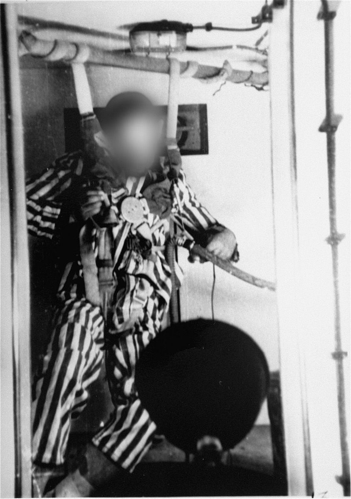

Dachau, spring of 1942. Block 5, the experimental station.
A room scrubbed white: carbolic, floor wax, warm machine oil, last night’s cigarettes.
In the middle of it, bolted to the floorboards, the chamber —
a steel box the size of a wardrobe, lent by the Luftwaffe, painted battleship grey,
riveted, sealed, with one round porthole of thick glass at the height of a seated man’s eyes.
Along its flank, the instruments:
the altimeter, the barometer, the needle that counts in metres what it takes away in air;
a stopwatch on a chain; a cine-camera on its tripod; a pump that hums like a contented beast.
And facing the porthole, two chairs.
Two chairs, as at the theatre, as at a recital of Schubert Lieder.
Between them, a little table:
a notebook bound in oxblood leather, a fountain pen, a coffee pot,
two porcelain cups with gilded rims, a plate of Linzer biscuits dusted with sugar.
Through the window, the spring. Birch leaves. A blackbird. The smoke of the camp.
In the first chair, the doctor.
SS, thirty-something, a white coat thrown open over the field-grey tunic,
the cap with the death’s head resting on his knee like a sleeping cat,
a silver Odal rune at his collar, a wedding ring, the nails clean and pared,
boots polished so bright that the porthole floats in each of them, twice.
He smells of Kölnisch Wasser and tobacco. He has read Hölderlin. He quotes him.
He is pleased. He is a little in love — with science, with Germany, with the woman at his side.
In the second chair, the wife.
Blonde, the hair rolled and pinned in the fashion of that spring,
a small hat tilted under a small black veil, a fox stole over a suit of dove-grey wool,
a string of pearls, lipstick the red of the banners on the Königsplatz.
She has taken off her kid gloves finger by finger and laid them across her lap.
Good family. Munich. A piano in the parlour, Schubert on Sundays.
It is she who holds the notebook. She writes down the minutes, the metres, the twitches.
Her hand rests near the brass lever. Her handwriting is beautiful.
And behind the glass, him.
Gaunt. A prisoner of the camp, a number sewn on his breast,
the striped drill hanging off him as off a wire hanger,
the head shaven, the cheekbones like the ribs of a boat left upside down on the shore.
They have buckled him upright into a parachute harness,
the straps cinched across a chest where all his bones can be counted,
a rubber hose at his side, a cable taped to his skin, a bulb in a wire cage above his skull.
Enclosed. The walls close enough to touch with both elbows. No room even to fall.
Then the pump begins, and the air begins to leave the box,
slowly, the way the living leave a house — three thousand metres, six, nine.
At first glance, nothing. A man in a cupboard. A man waiting for a train.
He looks down at his hands. He does not look at the window.
He knows who sits behind the window.
Through the steel, very faintly, he hears a woman laugh.
Monticules — of neither bodies nor skeletons, but of a much, much —
I cannot help but pause at this point.
I am neither a Jew nor a deportee; I was not even born at this time.
But how could a group of —
frankly, seeing them at first glance, you would never expect it to end
in a chamber where the air is drawn ten times thinner,
the door latch violently thrown open,
a very Germanly obedient Frau aligning the diagonal of her marvel of technology,
sweet promise of her Führer: a Reich regenerated at once,
work for all through joy, and gleaming, sporty young Germans,
the same as the once-glorious Arminius and his lofty band.
— Fräulein, you yourself must know,
for I am wont to speak only of this worthy glimmer in their völkerwanderunging soul:
you are, like me, a German — and a true German wife and mother at that.
And beyond: Aryan.
Our army… watch the timer and the pressure, do not let it pass the red mark, bitte.
Our army — I shudder at the mere prescience of it —
this band of yore, and overyore, and everyore,
that will gather nevermore on this sullenest of Earths.
— Fräulein, signs of expiration?
This whole posting — frankly, I do not mind it.
May I return to that truly pitiful and harsh reality of the mother of us all, Nature?
I, as you know, abhor on principle those immature, childish, truly mediocre, prancing so-called “Odinists”.
You know that. You know, however, the Odal rune that I wear.
I abhor the scoundrel spawn of that once out-of-control, pestiferous, degenerate race, those “Gypsies”.
The lot of them, trust me, chanted the same folie de chinoiserie, de je ne sais plus quoi, as these entartete —
sorry, I forgot your lacking Deutsch, oh my fair Fräulein.
Suffice it to say: degenerate.
— Let him, let him. His nose, besides — it will find plenty of air up there. Ah, ah.
Those jokes we used to make in the Burschenschaften.
Fräulein, Fräulein, mooon amour, n’est-ce pas? Pardon, pardon my fiery soul.
For the Aryan soul, truly, is at last tearing loose from that thousand-wide, clotting, crusty clench,
those devilishly white fangs drenched in a gravelly, murky gruel of vomited blood,
which these damned, wretched merchants of corruption sink into the betrayed, the violated, the uprooted —
NAY — nay, nay, no more.
This thing here — let it gargle and foam.
Let his head turn yellow, and the peculiar vein on his forehead swell to the point of bursting.
This man, as I so humorously describe him to you, oh fair, beautiful Fräulein —
was it you? I remember now: on the rock above the Rhine.
The fair, fair maiden on the rock. And the feared, feared Suebians of old.
Lorelei, it is you, no doubt.
Lorelei, your eyes, blue as the moon plunging behind the almost mirage-like sands of Heligoland.
Lorelei, I implore you. Stay — the hatch is open.
Stay and look, I beg of you.
Lorelei, your charm, your beauty make this gleam… this… so perfectly,
and I am, ach, at a loss for words —
only now, with these insultingly small eyes of the man that I am, only this now:
the bezel ornament of strings raining down, the graceful hair of golden angels,
and more — intricacies innumerable, lacings and witchy curvings, layers of hidden marvels
that never the jew-ometres, with their cunning weights,
their spitting, horrendous rattle and babble, could fathom —
they who sully with their wailing Goethe, Hölderlin, and the oldest of our forefathers.
They clench, Lorelei, their fists, full of erupting rage.
Open now. Push the button, Fräulein, meine Lorelei of fair and grace.
I won the bet with Friedrich. You see, Fräulein, the Flying Dutchman survives.
He may curse our small, courteous bicycle “rent”, but an Aryan brother to us he is, no doubt.
But the flying Juden —
the humour in this paradise is getting, I must say, quite worth continuing this historic, heroic moment.
Here, Herr Judtott, put a piece of ham in that beak of yours.
Ciao! Fräulein.
… of disgust-wrinkled hands and unmeasurable brocades,
sooty, to dye the insides, darkened by the bleakest, the most barbarous Judeo-Bolshevik,
full of their nightmarish chutzpah, like that old derelict, reeking, oily —
— and the lofty, the unfathomable, in the widest cloistered, ecstatic dreams of the sages and hermits of old.
The light, in its glowing sylphid capture, in eternity;
the result: the Obersturmführer, the doctor’s assistant, wincing at this madonna of the mirkenwood,
this peaceful and highly moral corner of the Land’s jolly hinterland, über alles, none doubting;
and the winking, no doubt, filled the heads of our two flaxen-haired, curly angelots.
Ah, Fräulein, this war — I cannot say it. Long it is, and no more.
His — unmistakably German, nay, Nordic, in the full atavistic grace
of this implacable proof of Aryan, oh so unique, idealistic reverie.
Now Erich, above the fuming clouds rising from the cannons of the Tigers, in the fog,
as though the mendicants of the Valkyries —
we left them to their Untermensch downfall and shame,
their wormish, splattered, dishonourable, minced carnage,
turned into that at the hands of mere Judeo-Bolshevik hordes.
These, you must know, brother — the classes we had are of no use.
It looks as though — the green, suspended tissue dangling from a tree,
fluttering in an atrocious, primitive spectacle: the flailing colon of the poor soul.
Cracking a cigarette, Hans approached this macabre, filandrous kite,
airing, flapping, abject, gargling, windy, ever graver — a sinister, bass-like, harrowing yell.
And the dangling entrail: this most correct symbol of the carnage of men, which they call great glory.
For nothing more than this:
the same, atrociously bulging, veiny, foul, abominably humming through the whole world
the final call of the grand paradise of equanimous death.

An unidentified prisoner in a low-pressure chamber, during the high-altitude experiments carried out for the Luftwaffe. Dachau concentration camp, March–August 1942.
United States Holocaust Memorial Museum, courtesy of the National Archives and Records Administration, College Park. Face blurred out of respect.
May his innocent soul be blessed.
for my brother and cousin, a child of Jacob, whose name I do not know
Magnified and sanctified be the great Name
that was not spoken in that white room, over the coffee and the gauges,
where they measured how long a man can live without air.
I am not of your people. I am of the children of Noah, your elder cousins,
to whom it was said, when the waters went down:
whoever sheds the blood of man… for in the image of God He made man.
I do not know your name. The camera kept your face and lost your name.
I have veiled your face, so that no one may look at you again the way they looked at you.
You were not a worm. You were a man.
My brother, my cousin, child of Jacob, son of Abraham —
as I am a son of Noah, a son of Adam, from the same dust.
May He who keeps all the bones of the just keep yours, every one.
May the breath they took from you, metre by metre, be given back to you whole.
May your name, which is known above, be bound up in the bond of life.
May He who makes peace in His high places make peace upon us,
upon all Israel, and upon all who dwell on earth.
And let us say: Amen.